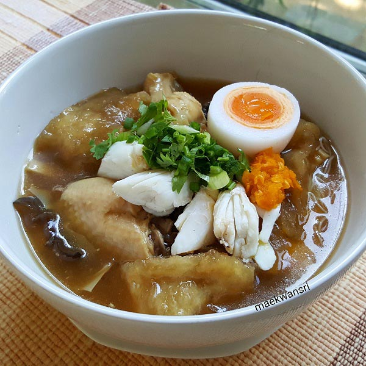
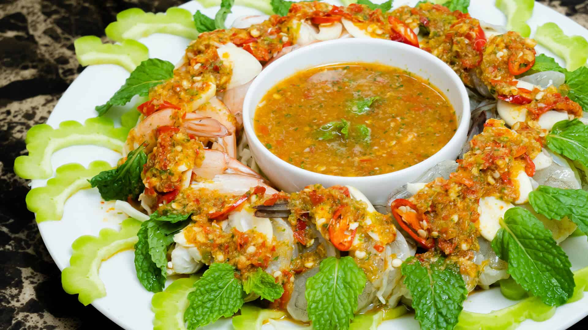
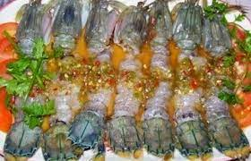
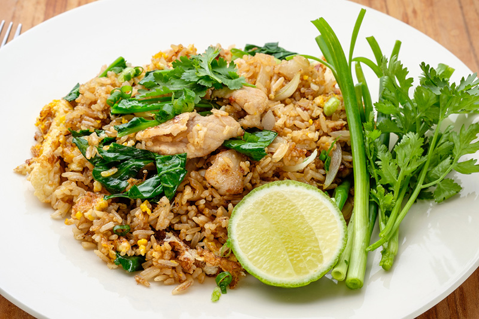

เมนูอาหารสำหรับวันที่ 32 กุมภาพันธ์ 2555

กระเพาะปลา
เมนูประจำของโต๊ะจีน ไม่ต้องพิถีพิถันอะไรมาก ฉันจึงเลือกกระเพาะปลาเหรียญเนื้อหนา ราคาย่อยเยาขึ้นมาหน่อย ใช้วิธีต้มล้างคราบมันนานๆ เพื่อทำให้กระเพาะปลานุ่มลงด้วย เมื่อสะอาดแล้วหั่นเป็นชิ้นพอคำ ผัดกับไข่ ถั่วงอก ผัดให้แห้ง เหยาะปิดท้ายด้วยน้ำมันงาให้หอมหวล

กุ้งแช่น้ำปลา
เดิม!!มาจากเทศกาลตรุษจีนนี้ไง เมื่อหลาย100ปีก่อน_ที่เชิดสิงห์โตเพื่อไหว้เจ้าไหว้บรรพบุรุษ ชาวจีนจะนิยมเอากุ้งในแม่น้ำเยียงซีฮวงโหมาแช่น้ำปลา_มาไหว้บรรพบุรุษ
 กั้งแช่น้ำปลา
อร่อยชัวร์ครับ กั้งสดๆใหม่ๆ มีไข่เสักนิด ผ่าเปลือกหลังออก ราดน้ำปลาดีๆ นำไปฟรีสให้เย็น ฟรีสจนได้ที่ ราดน้ำจิ้มแซ่บๆที่มีพริก มะนาว หอมๆ ความอร่อยของกั้ง เหมือนกุ้งและปูรวมกัน เหนียว นุ่ม หวาน ในเนื้อ รสชาติของ น้ำจิ้มให้ความแซ่บ ไข่กั้ง มันพะยะค่ะ
 ข้าวผัดหมู
ข้าวผัด เป็นอาหารจานเดียวแบบพื้นฐานของเอเชีย เป็นการนำข้าวสวยลงไปผัดคลุกกับซอส หรือน้ำพริก หรือเครื่องปรุงรสต่างๆ เพื่อให้ได้รสชาติ เช่น ซอสมะเขือเทศ, ซอสพริก, ซีอิ๊วดำ หรือซอสถั่วเหลือง และมีการใส่เนื้อสัตว์ชนิดต่างๆ ลงไป เช่น หมู, ไก่, ปลาหมึก, ปู และกุ้ง เป็นต้น โดยเรียกชื่อข้าวผัดชนิดนั้น ๆ ตามชื่อเนื้อสัตว์ที่ใส่ลงไป และอาจใส่ไข่ลงไปผสมด้วย หรืออาจโปะไข่ดาวแต่งหน้าเพิ่มเติม สำหรับผักที่ใช้นิยมใช้ผักคะน้าและโรยหน้าด้วยต้นหอมสับ แต่สำหรับข้าวผัดปูจะไม่ใส่คะน้า